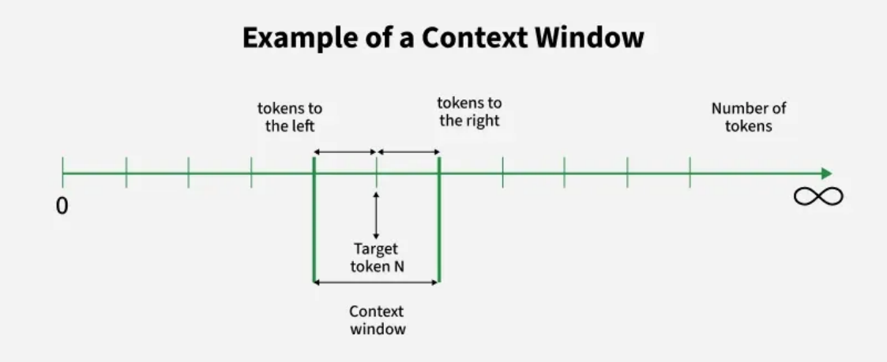
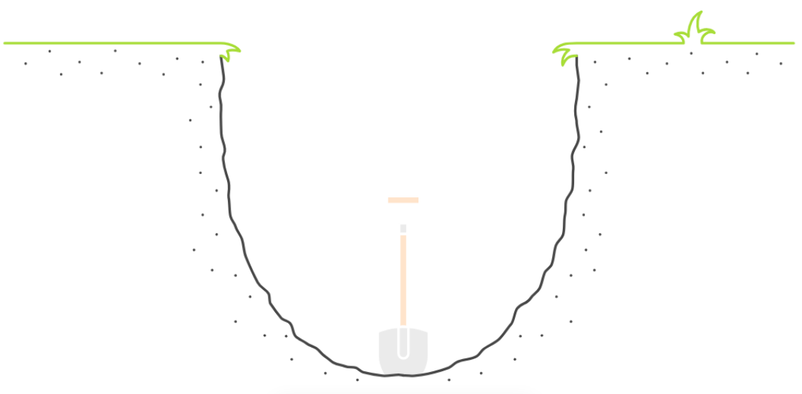

Context Window
在大语言模型中，Context Window（上下文窗口）是指模型在一次推理过程中能够同时读取和理解的 最大 Token 数量。简单来说，上下文窗口决定了模型在生成回答时能够“看到”的信息范围，包括用 户输入的文本、系统提示（System Prompt）、对话历史以及模型已经生成的内容。

在实际运行过程中，大语言模型的工作方式是基于上下文进行预测。当用户输入一段文本后，模型会 将所有输入 Token 一起送入模型进行计算，然后根据这些上下文信息预测下一个最可能出现的 Token。随后模型再把新生成的 Token 加入上下文，继续预测下一个 Token，如此循环，直到生成完 整的回答。因此，模型的理解能力在很大程度上取决于它能够看到多少上下文信息。
然而，大语言模型的上下文窗口并不是无限的，而是受到模型结构和计算资源的限制。由于 Transformer 架构中的注意力机制需要计算序列中每个 Token 与其他所有 Token 之间的关系，因此计 算复杂度会随着 Token 数量的增加而迅速增长。如果上下文长度翻倍，注意力计算的成本往往会增加 到原来的四倍，这也是早期模型上下文长度较小的重要原因。
在不同的大语言模型中，上下文窗口的大小差异较大。一些早期模型的上下文窗口通常只有几千 Token，而近年来随着模型结构优化和硬件性能提升，许多模型已经支持更长的上下文长度。例如，一 些模型可以支持数万甚至更长的 Token 输入，这使得模型能够处理更复杂的文档、长对话以及代码项 目。
上下文窗口不仅限制输入文本的长度，也限制模型生成内容的总长度。通常情况下，输入 Token 数量 与输出 Token 数量的总和必须小于模型的最大上下文窗口。例如，如果一个模型的上下文窗口为 8000 Token，而用户输入已经占用了 6000 Token，那么模型最多只能再生成 2000 Token 的内容，否 则就会超出模型限制。
在构建实际的大模型应用时，上下文窗口是一个非常重要的设计因素。例如，在多轮对话系统中，随 着对话轮数不断增加，历史消息会逐渐占用更多的 Token。如果不进行管理，就可能导致上下文窗口
被历史对话填满，从而无法继续生成新的内容。

为了解决这个问题，系统通常会采用对话摘要、历史截断或记忆机制等方法来压缩上下文信息。 在检索增强生成系统（RAG）中，上下文窗口同样会影响系统设计。当需要向模型输入多个文档片段 时，如果文本块过多或过长，就可能超出模型的上下文限制。因此，RAG 系统通常需要对文档进行合 理切分，并通过检索算法选择最相关的文本片段，以保证输入信息既完整又不会超过模型的处理能 力。
近年来，一些研究工作也在尝试突破上下文窗口的限制。例如，通过改进注意力机制、引入稀疏注意 力结构或使用分层记忆结构，可以在一定程度上支持更长的上下文处理能力。这些技术的发展，使得 大语言模型逐渐能够处理更复杂的任务，例如长文档分析、大规模代码理解以及长期对话等场景。
总体来看，上下文窗口是大语言模型理解能力的重要边界，它决定了模型在推理过程中能够利用多少 信息。对于开发者来说，合理管理上下文内容、控制 Token 使用以及优化输入结构，是构建高效大模 型系统的重要工程能力。